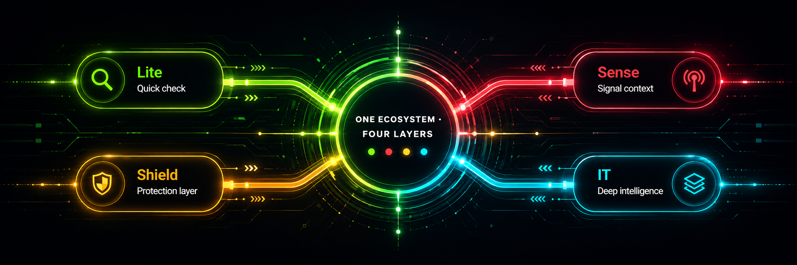

QANTRAE SECURITY ECOSYSTEM
Stop. Think. Scan.
One security family built to help you slow down suspicious moments, understand what you are seeing, and choose the right depth of investigation before you act.

THE FAMILY
Use the layer that fits the moment.
The products share one direction, but each keeps a distinct job.
Lite
A fast first look when you need a simple local signal without turning the moment into a full investigation.
→02 · INTERPRETSense
Reads visible patterns and explains what they may mean so warning signs are easier to understand.
→03 · PROTECTShield
A stronger protection lane for deeper inspection, evidence, and defensive decision support.
→04 · INVESTIGATEIT
The investigation layer: richer technical context, supporting evidence, and a structured case view.
→THE IDEA
Security should show its reasoning.
QANTRAE is designed around a simple behavior: create enough space between a suspicious signal and the next click.
Not every question needs the heaviest tool. The family lets you move from a quick check toward deeper investigation when needed.
Scores and warnings should be accompanied by signals, context, and limitations rather than presented as unexplained certainty.
TRUST LAYER
Built around boundaries.
The ecosystem separates product roles, keeps local analysis local where designed, and uses protected server-side bridges only where deeper intelligence requires them.